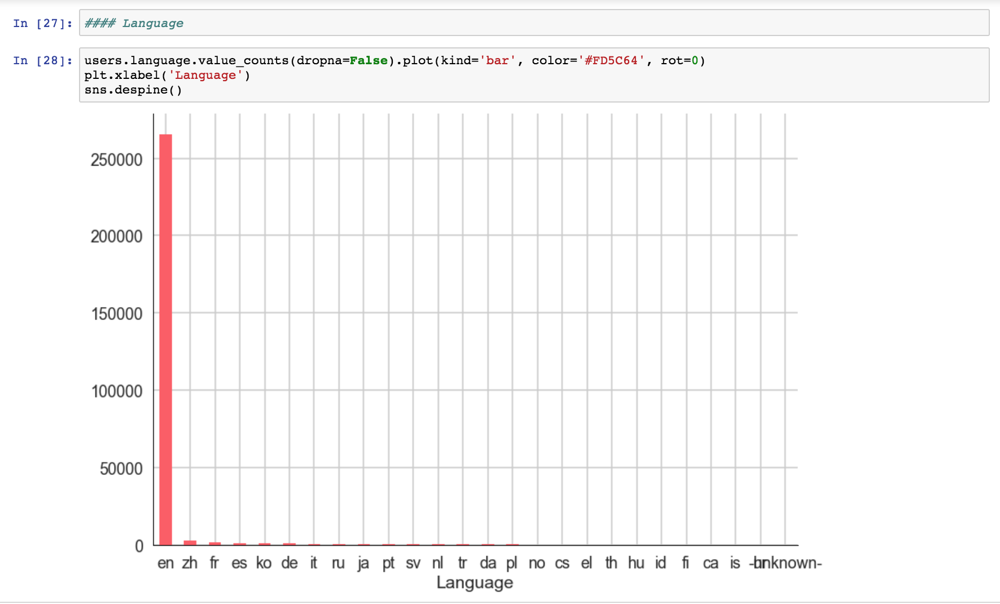
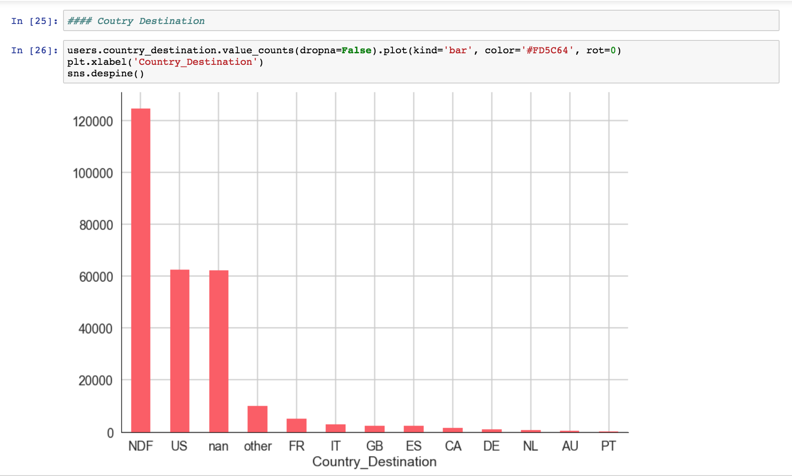

6.S198 Data Gathering Workshop
Jenny Xue jennyxue@mit.edu
1.2) Downloading and Viewing Data
-
What about the structure of this dataset might make it harder to feed into a machine learning model? (Hint: is all the information in users.csv useful?)
-
Files in this dataset contain columns that have irrelevant information. For instance, in "train_users_2.csv", we most likely don't need the columns "first_device_type,"
"signup_method", "signup_flow", and "first_browser." This means that we need to clean the data before passing it into our machine learning model.
-
Is this dataset a good fit for the task at hand? What problems could you think of that might make this dataset not useful?
-
I believe that this dataset is a good fit for the task at hand. For this task, we are asked to predict which country a new user's first booking destination will be. This dataset
contains information such as which user has traveled to which country and provides summary statistics of users' age group, gender, and country of destination, which are all very
useful information. However, all the users in this dataset are from the USA, which means that our model will not be a good predictor for users who are not from the USA.
1.3) Data Processing and Kaggle kernels
-
Using the kernel provided as a starting point, build another data visualization or compute another statistic that might be relevant for the dataset.
Take a picture of the code that you write, and of any outputs and visualizations that you create.
-
First, I visualized the number of users vs. their primary language. In this case, since the dataset is users from USA, it's no suprise that the majority
of the users chose English.

-
Then, I visualized the number of users vs. their country destination. The majority of the destinations was no destination found, which means that there was no booking.
This means that we might need more data or else we won't have enough training data.

1.4) Brainstorm Data Collection Strategy
-
Brainstorm data collection for your project and summarize your strategy for the writeup.
-
We plan on predicting the bracket results for the 2018 League of Legends World Championship. This dataset from Kaggle provides all major
competitive League of Legends match games from 2015 to 2018 and their results. This dataset gives detailed statistics such as gold per minute,
player kills and their coordinates, gold difference, and wins for every game. The downsides of this dataset is that it is the only dataset that contains
information on professional League of Legends games, and it doesn't contain information about the minor leageues and the LPL. This means that we will not have as much
data to train for those minor teams. Also, another difficult thing about this project is that player trades happen quite frequently, so we need to somehow distinguish between team wins
and individual player wins. We can also scrape data from league of legends match history websites, but that would require us to search up each past game and scrape each website by hand.
Overall, this dataset gives us the majority of what we want, we just need to clean it.
League Data